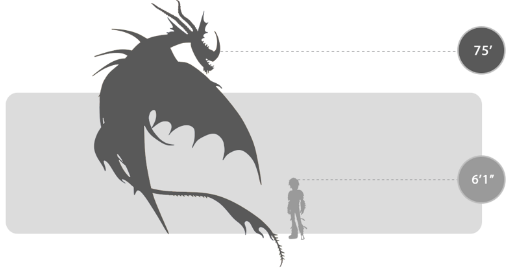
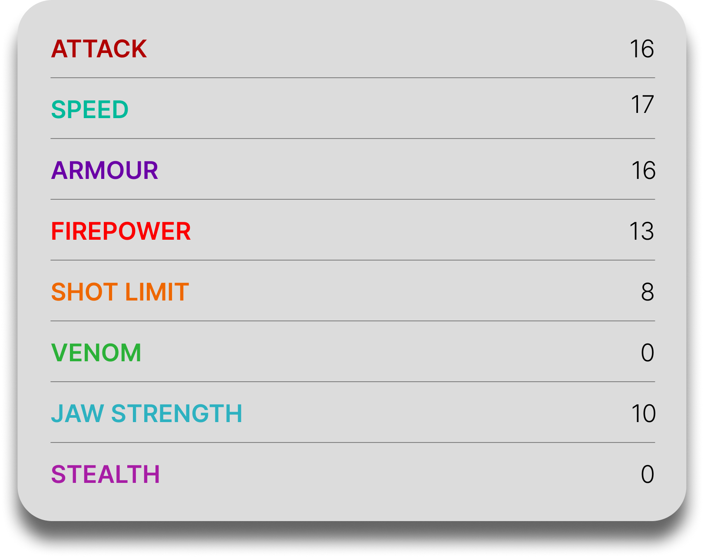

Death Song
General Overview
The Death Song is a large dragon belonging to the Mystery Class. Deceptively beautiful in both appearance and voice, it is one of the most dangerous predatory dragons in the archipelago. Rather than breathing fire, the Death Song uses a hypnotic siren-like call to lure prey close before trapping it in a fast-hardening amber-like substance, making it a deadly hunter that relies on beauty, sound, and ambush.


Physical Appearance
- Body & Color: It has a long, slender body with vibrant orange coloration, darker striping, and striking blue, yellow, and orange accents.
- Head & Face: Its head is decorated with patterned violet frills, a curved nasal horn, two twisted rear horns, small blunt spikes, and barbels beneath the jaw.
- Appendages: Its build is exceptionally thin and elegant, giving it a graceful but dangerous appearance.
- Wings & Tail: It has large graceful wings with trailing edges, bright swirling patterns, and eyespot markings, while its long tail ends in a sail-like fin with curved edges.
Abilities and Combat
- Siren Song: It produces a hypnotic call that can lure dragons from up to a mile away and leave them listless and unresponsive.
- Amber Blast: Instead of fire, it spits a thick amber-like substance that quickly hardens into a cocoon, trapping dragons and humans alike.
- Ambush Hunting: It prefers to surprise prey rather than attack directly, combining its song with sudden ranged attacks.
- Mimicry: Young Death Songs can imitate sounds and songs, including those made by humans.
- Speed and Agility: Its long, lightweight body and broad wings allow it to move swiftly and gracefully in open air.
- Self-Immunity: Death Songs are immune to their own luring songs, allowing them to hunt without affecting themselves.
Behavior and Personality
- Intelligence: It is a cunning and highly effective predator that uses sound and timing rather than brute force.
- Temperament: Death Songs are notoriously wild, predatory, and dangerous, especially when hunting.
- Behavior: They are mostly solitary creatures that lure prey in before trapping and consuming it.
- Social Traits: They usually avoid social behavior, though some individuals can bond with dragons or humans they trust.
- Diet: Their known diet includes other dragons, eels, chickens, humans, and fruit.